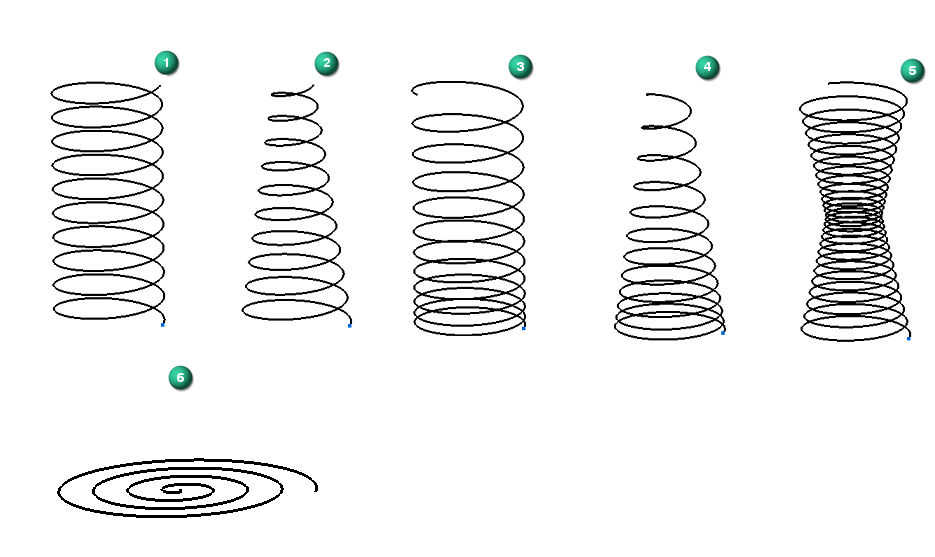
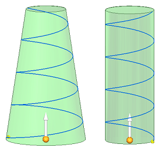

Helical Curve command
Use the Surfacing tab→Curves group→Helical Curve command  command to create a wide variety of helical curves in the synchronous and ordered
environments.
command to create a wide variety of helical curves in the synchronous and ordered
environments.
You can create a helical curve using different types of inputs, such as a circle, a line and a point, three points, a cylinder face, or a cone face. The helical curve you create is supported in the Part and Sheet Metal environments. The resulting curve can be used as the basis for a swept protrusion, cutout, construction surface, and other similar actions.
The Helical Curve command supports constant pitch, variable pitch, and compound curves. The resulting curve can be based on length and number of turns, length and pitch, or pitch and number of turns. You can also taper the curve by angle or diameter, and set a right-handed or left-handed rotation.
Sample helical curves: constant pitch (1); constant pitch and taper (2); variable pitch (3); and variable pitch and taper (4); compound curve with variable pitch and variable diameter (5) spiral (6)

After defining a set of set of helical curve parameters, you can save the settings for reuse at another time. See Helical Curve Parameters dialog box, Helical Curve command bar, and Using the Helical Curve command for more information.
The following illustration shows two different helical curves in the process of being created using the faces of a cone and a cylinder.

How do I
Create a helical curveCreate a spiral curve
Look up more details
Helical Curve command barHelical Curve Parameters dialog box